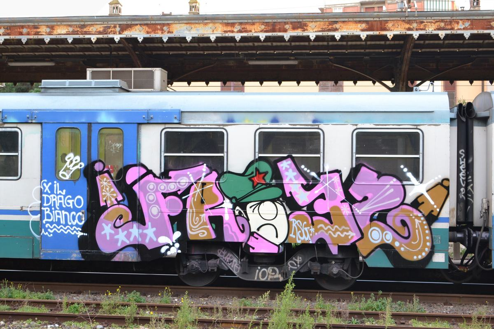

Andrea L. Baldini
Art, law, and creativity in public space.
[Affiliation line — to be confirmed]

About

Andrea L. Baldini studies how creativity shapes public life, from graffiti and urban aesthetics to cultural heritage and intellectual property, and how cities, institutions, and communities can make room for it. Trained in philosophy, he brings together art and design theory, law, and management to rethink how public space is governed and who gets to create in it.
In progress
Can There Be Street Art in Museums?
Who Decides What Stays on the Wall? Street-Level Bureaucracy and the Management of Spontaneous Public Art
Art and Design in the Age of AI
Recent
Philosophical Perspectives on Intellectual Property Law
Ontological Metamorphoses in the Street: How Street and Official Public Art Can Metaphysically Transform into Each Other
Street Art as Deeds: A Reply to Kukla
Curating
I curate exhibitions and write for them, most recently Wild Traces (K-Gallery, Chengdu, 2026), and I advise cities and cultural organisations on public and street art. Exhibitions →